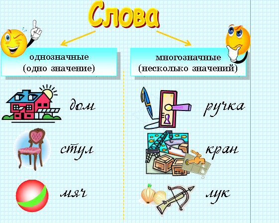
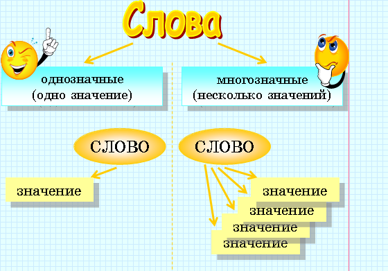

| Синонимы – слова, разные по написанию, но близкие по значению. Например: дорога – путь храбрый – смелый говорить – сообщать |
| Антонимы – слова, противоположные по значению. Например: чёрное – белое день – ночь бежать – стоять |